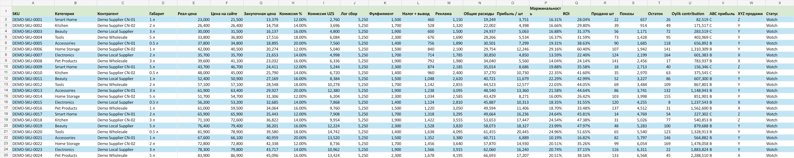

API asosidagi birlik iqtisodiyoti paneli
Demo mahsulot ma'lumotlarini ishchi boshqaruv paneliga qanday tartiblash mumkinligini ko'rsatadi: sotuvlar, namoyishlar, real narx, qoldiq, tannarx, komissiya, logistika, reklama, foyda, marja, ROI, ABC, XYZ va holat.
- ✓Sun'iy mahsulot kodi, narx, yetkazib beruvchi, sotuv, namoyish va qoldiq ma'lumotlari ishlatilgan.
- ✓Faqat formulalar va jadval tuzilmasi bilan ishlaydi, API kaliti yoki yashirin kompaniya ma'lumotlari yo'q.
- ✓Elektron savdo va xarid ma'lumotlari narx, foydalilik va ish jarayonlariga oid qarorlarni qanday qo'llab-quvvatlashini ko'rsatadi.
Google Sheets
Birlik iqtisodiyoti
API mantiqi
Elektron savdo tahlili
Demo loyiha
